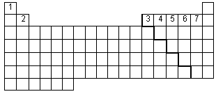
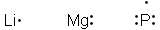

Unit 1: Matter, Chemical Bonding, and Chemical Trends
Activity 5: Chemical Bonds, Lewis Diagrams and Physical Properties of Ionic and Molecular Compounds
Content
Chemical Bonding
The electrostatic forces of attraction holding atoms, ions, and molecules together are generally referred to as chemical bonds. All chemical bonds are formed as the result of the simultaneous attraction of two or more nuclei for electrons. When the forces of attraction are greater than the forces of repulsion and energies of the respective atoms/ions are sufficient for a chemical reaction, a chemical bond will form to produce an ionic compound or a molecular compound.
The tendency of the atoms is to achieve an isoelectronic configuration with a noble gas. Metals will tend to donate electrons and the non-metals will tend to accept the electrons. The oxidation number of the element provides a clue as to how many electrons are donated or accepted by the atom. The electrons that are involved in the chemical bond are known as valence electrons. The number of valence electrons can be determined by the element’s group. The following “empty” periodic table summarizes the number of valence electrons for the noted groups:

 Example:
Example:
Boron is in group “3” and so the number of valence electrons available for bonding is 3. Iodine is in group “7” and so the number of valence electrons is 7.
The symbol of the element accompanied by dots representing its respective number of valence electrons is known as the Lewis symbol for that element.
 Question
Question
- How many valence electrons do each of the following elements have?
- Potassium ____
- Arsenic ____
- Oxygen ____
- Bromine ____
 Answer
Answer
The Lewis Symbol
Example
Here are some example of elements’ respective Lewis symbols:

Question
- Draw the Lewis symbols for each of the following elements:
- calcium ____
- aluminum ____
- nitrogen ____
- oxygen ____
Answer
Lewis Dot Diagams and Ionic Compounds
Ionic compounds consist of a metal and non-metal. The metal will donate its valence electron(s) and the non-metal will accept the electron(s). The metal will donate its electrons to achieve the electronic configuration of the noble gas before it. The non-metal will accept the electrons to achieve an octet configuration similar to the electronic configuration of the next noble gas. Each element will end up being an ion with a charge corresponding to the number of donated/accepted electrons. Lewis dot diagrams are used to show ionic bonding.
The following sample questions illustrate ionic bonding using Lewis dot diagrams.
Sample Question 1
- Show the Lewis dot diagram of sodium chloride, NaCl.
 Sample Solution
Sample Solution
Follow these steps:
A- Using the sodium chloride as the first example, recognize the following:
- this is an ionic compound consisting of a metal and non-metal;
- sodium is the metal and has one valence electron and it will donate it to chlorine; (Sodium’s electronic configuration will be isoelectronic with neon.)
- sodium will achieve a 1+ charge in the compound;
- chlorine is a non-metal and has 7 valence electrons and will need one more electron to obtain a 1- charge in the compound and achieve an octet configuration isoelectronically equivalent to argon;
Na• will lose the electron and donate it to the chlorine atom
Chlorine will accept the electron from sodium.
The process is as follows:
Na  Na+ + e- and Cl + e-
Na+ + e- and Cl + e-  Cl-
Cl-
Sample Question 2
Show the Lewis dot diagram of barium phosphide, Ba3P2.
- Notice that there are three bariums and 2 phosphorus atoms in the compound.
- Each barium will lose 2 electrons and each phosphorus will gain 3 electrons.
 Answer
Answer
- Your answer will look like this:
This is a disclaimer. External Resources will open in a new window. Not responsible for external content.
Unless otherwise indicated, all images in this Activity are from the public domain or are © clipart.com or Microsoft clipart and are used with permission.